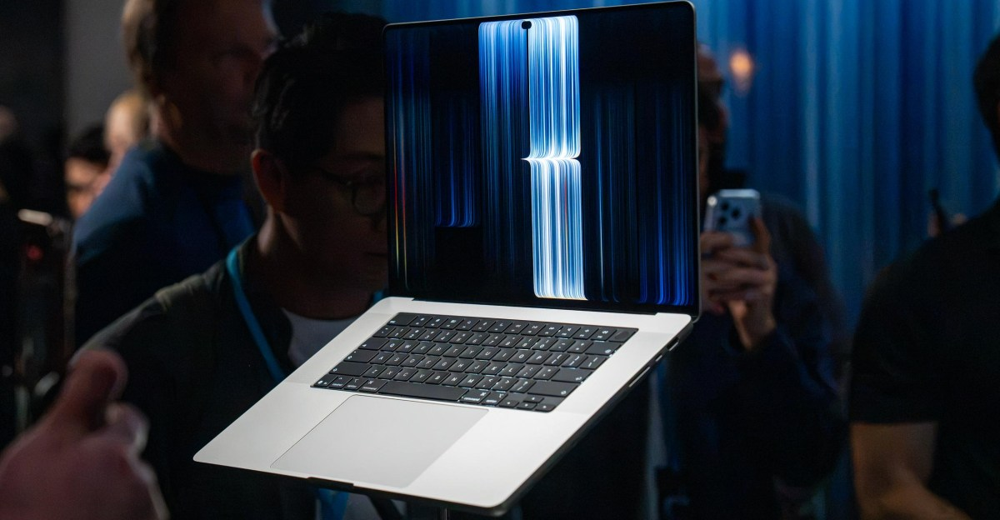

for DC Advanced UX Team.Vivi · Yohan · Libby · Lim Jisu · Katey · Anna
Latest News

Interaction
MacBook: the window lights grow
The new MacBook Pro is the first Mac you can touch. The sensor sits in the panel, not on a layer over it. Poke the red, yellow and green window lights and they grow; a menu does the same, so a finger has a larger target. Music lives in the Dynamic Island, and the volume and brightness sliders come out of that pill instead of the corner. The 14-inch model is 3 pounds, the 16-inch is 4, on a tandem OLED rated to 2,000 nits. There is no Pencil. The touch version starts at $2,899.
새 맥북 프로는 손으로 만질 수 있는 첫 맥이다. 센서는 패널 위에 얹힌 층이 아니라 패널 안에 있다. 빨강, 노랑, 초록 창 버튼을 누르면 커지고, 메뉴도 같아서 손가락이 더 큰 과녁을 얻는다. 음악은 다이내믹 아일랜드에 있고, 음량과 밝기 슬라이더는 모서리가 아니라 그 알약에서 나온다. 14인치는 3파운드, 16인치는 4파운드이며 탠덤 OLED는 2000니트다. 펜슬은 없다. 터치 모델은 2899달러부터다.
someform Studio in Berlin cuts a 30-second film for the Nike Air Zoom Hyperslide, made with Hyperice. The shoe is sand-colored and almost one tone. The heat and vibration across the top of the foot are not a diagram. They are abstract passes for cushion, vibration and heat, edited to the shape of the slide. The only strong color is a red glow on the Hyperslide Pod when the heat is on. Christopher Sims directed the motion. Zelig Sound did the track.
베를린의 섬폼 스튜디오가 하이퍼아이스와 함께 만든 나이키 에어 줌 하이퍼스라이드를 위해 30초 영상을 자른다. 신발은 모래색이고 거의 한 톤이다. 발등 위의 열과 진동은 도표가 아니다. 쿠션, 진동, 열의 추상 컷이고, 편집은 슬리퍼의 형태를 따른다. 강한 색은 열이 켜질 때 하이퍼스라이드 팟의 붉은 빛뿐이다. 크리스토퍼 심스가 모션을 맡았고, 젤리그 사운드가 트랙을 했다.
Mother Design's identity for the psychic app Purple Garden started in charcoal, with automatic drawing, then moved between design software and AI. The wordmark has elongated serifs and corners that curve outward. A crystal-like glyph is the mark for guidance and the base of the icons. Literatura Present carries the long descenders. ABC Social does the screen text. Living type moves like cymatics, the shape sound leaves on a surface. Six warmer purples replace the blue-purple this category usually uses.
마더 디자인이 심령 앱 퍼플 가든을 위해 만든 아이덴티티는 목탄과 자동 드로잉에서 시작해 디자인 소프트웨어와 AI 사이를 오간다. 워드마크는 늘린 세리프와 밖으로 굽는 모서리를 갖는다. 수정 같은 글리프가 안내의 표식이고 아이콘의 바탕이다. Literatura Present가 긴 디센더를 맡고, ABC Social이 화면의 본문을 맡는다. 리빙 타입은 소리가 표면에 남기는 모양을 따른다. 팔레트는 더 따뜻한 보라 여섯이다.
Alexa's Home Map drops the flat plan. The house is a 3D model pulled from Mapbox at your address, then scanned room by room, 15 to 20 minutes on an iPhone with lidar. Devices are dragged onto the model. A lamp that is on glows in the color it is set to. A speaker that is playing gets dancing notes. Outside, Ring cameras place a small figure when someone approaches, and a timeline rewinds 24 hours across every camera. Weather is drawn on the exterior. The old 2D maps do not carry over.
알렉사의 홈 맵은 평면도를 버린다. 집은 주소로 맵박스에서 가져온 3D 모델이고, 라이다가 있는 아이폰으로 방마다 스캔한다. 15분에서 20분이다. 기기는 모델 위로 끌어다 놓는다. 켜진 조명은 설정된 색으로 빛나고, 재생 중인 스피커에는 춤추는 음표가 뜬다. 밖에서는 링 카메라가 사람이 다가오면 작은 형상을 두고, 타임라인은 모든 카메라를 24시간 되돌린다. 날씨는 외부에 그려진다. 옛 2D 지도는 넘어오지 않는다.
Span's identity for the Illinois Department of Human Rights sets the words Human Rights twice, large, in HEX Franklin. Illinois Department of sits between those lines, so the lockup reads as an equals sign before you read the name. Nick Adam at Span points the stripes at Lester Beall's posters as much as at a flag. The rest is a kit: banners, buttons, stickers, and a way to answer a fast public message. The type stays heavy. The punctuation is the logo.
Span给伊利诺伊州人权部做的识别，用HEX Franklin把Human Rights大写两行。Illinois Department of夹在两行中间，所以还没读名字，组合就已经是一个等号。Span的Nick Adam说这些条纹既像旗帜，也指向Lester Beall的海报。其余是一套工具：横幅、徽章、贴纸，以及回应一条紧急公共信息的办法。字重很重。标点就是标志。
스팬이 일리노이 인권부를 위해 만든 아이덴티티는 HEX Franklin으로 Human Rights를 크게 두 줄 쓴다. Illinois Department of가 그 사이에 있어, 이름을 읽기 전에 로크업이 등호로 읽힌다. 스팬의 닉 애덤은 이 줄을 깃발만큼 레스터 빌의 포스터에 둔다. 나머지는 키트다. 배너, 버튼, 스티커, 그리고 급한 공공 메시지에 답하는 방식. 글자는 무겁다. 문장 부호가 로고다.
Ucupaint 3.0, ucupumar's free Blender painting add-on, hides the side panels and puts the layer list first. A Base Layer is made for you, holding the base value of every channel. Height and vector displacement leave the Normal channel and become their own. One preview mode now covers a channel, a layer, its alpha, a mask, or custom data. Adjustment layers take the layer below and run modifiers on it. New decals are spherical and cylindrical. It runs on Blender 2.76 through 5.3.
우쿠푸마르의 무료 블렌더 페인팅 애드온 우큐페인트 3.0은 옆 패널을 숨기고 레이어 목록을 앞에 둔다. 베이스 레이어가 자동으로 만들어져 모든 채널의 기본값을 담는다. 높이와 벡터 변위는 노멀 채널을 떠나 각자 채널이 된다. 미리보기 하나면 채널, 레이어, 알파, 마스크, 커스텀 데이터를 본다. 조정 레이어는 아래 레이어를 받아 모디파이어를 돌린다. 새 데칼은 구와 원기둥이다. 블렌더 2.76부터 5.3까지 돈다.
Amazon's Echo Show 16 is a 16-inch display at $499.99, wall mount in the box, with Nanomatte glass at $569.99. Screen Styles are four homes: a family organizer, a smart-home dashboard, Alexa widgets, or a photo frame. They can stay on, or wake when you walk up. A favorites bar switches apps, including third-party skills. Replies collapse into cards you can pin. Full-screen ads stay on the Recommendations face, and that face can be turned off.
亚马逊的Echo Show 16是一块16英寸屏，499.99美元，盒子里有壁挂。Nanomatte玻璃569.99美元。Screen Styles是四张主页：家庭日程、智能家居仪表、Alexa小组件，或相框。可以一直亮着，也可以人走近再醒。收藏栏用来换应用，包括第三方技能。回答收成可以钉住的卡片。全屏广告只留在Recommendations这一面，而且可以关掉。
아마존의 에코 쇼 16은 16인치 디스플레이다. 499.99달러이고 벽걸이가 들어 있다. 나노매트 유리는 569.99달러다. 스크린 스타일은 홈 네 개다. 가족 일정, 스마트홈 대시보드, 알렉사 위젯, 사진 프레임. 계속 켜 두거나 다가가면 깨어난다. 즐겨찾기 막대가 서드파티 스킬을 포함한 앱을 바꾼다. 대답은 고정할 수 있는 카드로 접힌다. 전체 화면 광고는 추천 면에만 있고, 그 면은 끌 수 있다.
XPPen's Magic Pro 13 is a 12.95-inch LCD, 3096 by 2064, up to 120 hertz, with nano-etched glass. The X4 pen reads 16,384 pressure levels and 60 degrees of tilt. A physical switch kills finger touch so a resting palm does not draw. Alone, it runs Android 16: Canvas for a sketch, Shelf for tagged references. A DP-IN USB-C port makes the same glass a pen display for desktop software. The other USB-C can send the Android screen out. Preorder is $899.99.
XPPen的Magic Pro 13是一块12.95英寸LCD，3096×2064，最高120赫兹，玻璃做了纳米蚀刻。X4笔读取16384级压力和60度倾斜。实体开关关掉手指触摸，手掌搁着也不会画。单机跑Android 16，Canvas用来速写，Shelf给参考图打标签。DP-IN的USB-C让同一块玻璃变成桌面软件的数位屏。另一个USB-C可以把画面送出。预购899.99美元。
엑스펜의 매직 프로 13은 12.95인치 LCD다. 3096×2064, 최대 120헤르츠, 유리는 나노 에칭이다. X4 펜은 압력 16384단계와 기울기 60도를 읽는다. 물리 스위치가 손가락 터치를 꺼서, 손바닥을 올려도 그려지지 않는다. 혼자 쓸 때는 안드로이드 16이다. Canvas는 스케치, Shelf는 태그된 참고다. DP-IN USB-C가 같은 유리를 데스크톱용 펜 디스플레이로 바꾼다. 예약은 899.99달러다.
Michael Berardini's Monitor, two minutes, opened this year's Annecy. He taught himself Blender over a year and a half and drew the characters in Grease Pencil on top of a modeled house, so the people stay flat illustration inside a room that has volume. Music is by Batu Sener. Sound is by Jeremy Ben Ammar. He says generative tools were not in the cut: the point was the process. A workflow reel shows that pencil pass over the set. The fear in the frame is a parent being watched.
Michael Berardini的Monitor长两分钟，开了今年的安纳西。他用一年半自学Blender，角色用Grease Pencil画在建好的房子上，所以人是平的插画，房间却有体积。音乐是Batu Sener。声音是Jeremy Ben Ammar。他说生成工具没有进成片，重点是过程。一支流程片让你看见铅笔层盖在场景上。画面里的恐惧，是一个被看着的家长。
마이클 베라르디니의 모니터는 2분이고, 올해 안시를 열었다. 그는 1년 반 동안 블렌더를 혼자 익히고, 모델링한 집 위에 그리스 펜슬로 인물을 그렸다. 사람은 평면 일러스트이고 방은 부피가 있다. 음악은 바투 세네르, 사운드는 제레미 벤 아마르다. 생성 도구는 컷에 넣지 않았다고 한다. 포인트는 과정이다. 워크플로 릴이 그 연필 패스를 세트 위에 보여 준다.
Studio Loutsis signs the Theodore Roosevelt Presidential Library in Medora, the Snøhetta building in the Badlands. With Commercial Type they cut a face for everything from a trail placard to a pylon. Exterior marks are heavy timber and dark metal letters, built to weather with the envelope. Indoors, signs sit in milled blocks on the timber walls, flush, including a donor wall that is part of the cladding. The graphic is not a panel stuck on the architecture. The type is in the wood.
Studio Loutsis为梅多拉的西奥多·罗斯福总统图书馆做导视，建筑是斯诺赫塔在荒地里的那一座。他们和Commercial Type一起切了一套字，从小径标牌到标桩都用。室外是重木和深色金属字，要和建筑表皮一起风化。室内的牌子嵌进木墙铣好的块里，齐平，捐助墙本身就是覆层。图形不是贴上去的板。字在木头里。
스튜디오 루트시스가 메도라의 시어도어 루스벨트 대통령 도서관 사인을 맡았다. 배드랜즈의 스뇌헤타 건물이다. 커머셜 타입과 함께 트레일 표지부터 파일런까지 쓸 서체를 잘랐다. 외부는 무거운 목재와 어두운 금속 글자고, 외피와 함께 풍화되도록 했다. 실내 사인은 목재 벽에 파낸 블록 안에 평평하게 앉고, 기부 벽은 클래딩의 일부다. 그래픽은 붙인 판이 아니다. 글자가 나무 안에 있다.
CPMC's N6 is a motorcycle screen for wireless CarPlay and Android Auto, so the phone stays in a pocket. The panel is 6 inches, 1440 by 720, 800 nits, with brightness that follows the light, in an IP67 shell. Maps, Waze and Spotify run on that glass. The mount lets go with one button: a ball head for 20 to 26 millimetre bars, or a plate for a 12 millimetre navigation crossbar. There is a 7-inch N7 as well. The 6-inch starts at £135. The screen is the part you take with you.
Lectric's XP Lite3 puts a 3.5-inch full-color display on the bars of a folding e-bike, the same face used on its newer bikes, with integrated rear turn signals. Five pedal-assist levels can be set by the rider. A twist throttle sits on the bar because the bike is single-speed and has no shifter in the way. The motor is 300 watts continuous and over 800 at peak. The bike is 49 pounds. A Gates belt version costs $100 more than the chain. The display is what this bike now shows you.
렉트릭 XP 라이트3는 접이식 전기자전거 바에 3.5인치 풀컬러 디스플레이를 둔다. 최신 모델과 같은 얼굴이고, 뒤쪽에는 일체형 방향지시등이 있다. 페달 어시스트 다섯 단계는 라이더가 정한다. 싱글 스피드라 변속기가 바를 차지하지 않아 트위스트 스로틀이 앉는다. 모터는 연속 300와트, 피크는 800와트를 넘는다. 차체는 49파운드다. 게이츠 벨트는 체인보다 100달러 비싸다.
Runway's App Studio, dated 26 October, takes a plain description of a creative app and builds it with Runway's models, your brand and your files, then hosts the result. You do not export a prototype and find it a server. The note sits on the changelog beside Runway Ads, from the 27th, which reads your best-performing ads and makes on-brand variants for each placement. Ads waits for approval before it publishes. App Studio is the one to open: the brief is a sentence, and the files are already in it.
런웨이의 앱 스튜디오는 10월 26일자다. 필요한 크리에이티브 앱을 평문으로 적으면, 런웨이 모델과 브랜드, 파일로 만든 뒤 호스팅한다. 프로토타입을 내보내 서버를 찾을 필요가 없다. 옆에는 27일의 런웨이 애즈가 있다. 성과가 좋은 광고를 읽고 지면마다 브랜드에 맞는 변형을 만들며, 승인한 뒤에 올린다. 디자이너가 열 것은 앱 스튜디오다.
Norman Foster's first watch, with LEBOND, drops the lugs. The strap continues the case, so the two are one line. The case is 38.5 millimetres, 40 where the strap begins, 10 thick, in Grade 5 titanium, natural or matte black DLC. A bidirectional 12-hour bezel lets the hour hand read a second time zone. Hands use Super-LumiNova. Through the sapphire back, the rotor is blue or red, with five machined holes. The movement is an ETA 2892-A2, about 50 hours. The object is the joint.
노먼 포스터가 르본드와 만든 첫 시계는 러그를 없앤다. 스트랩이 케이스를 이어, 둘은 한 줄이다. 케이스는 38.5밀리미터, 스트랩이 시작되는 곳은 40, 두께 10이고, 5등급 티타늄의 내추럴 또는 매트 블랙 DLC다. 양방향 12시간 베젤로 시침이 두 번째 시간대를 읽는다. 바늘은 슈퍼루미노바다. 사파이어 백의 로터는 파랑 또는 빨강이고 구멍 다섯 개가 깎여 있다. 무브먼트는 ETA 2892-A2, 약 50시간이다.
Alan Hook's Equine Eyes is a white horse head you wear. Two 180-degree cameras sit where the eyes would be, overlapping a little at the front, for a field of about 350 degrees. Your own sides show up in the periphery. The picture is shifted toward blue and yellow, a stand-in for a horse's two-color vision. He started in 2017 with webcams on an Oculus Rift. A cardboard muzzle changed how people stood. Without the head, testers said something was missing. The mask is the interface.
Alan Hook的Equine Eyes是一颗你戴上的白色马头。两台180度摄像头放在眼睛的位置，前方略有重叠，视野大约350度。你自己的身体两侧会出现在余光里。画面被推向蓝和黄，用来代替马的两色视觉。他2017年用网络摄像头接Oculus Rift开始。一个纸板口鼻改变了人站立的方式。拿掉马头，测试者说少了什么。面具就是界面。
앨런 훅의 에퀸 아이즈는 쓰는 흰 말 머리다. 180도 카메라 두 대가 눈이 있을 자리에 있고, 앞에서 조금 겹쳐 시야는 약 350도다. 자신의 옆구리가 주변시에 들어온다. 그림은 파랑과 노랑 쪽으로 밀려, 말의 이색 시각을 대신한다. 그는 2017년 웹캠과 오큘러스 리프트로 시작했다. 골판지 주둥이가 서는 방식을 바꿨다. 머리를 빼면 뭔가 빠졌다고 했다. 마스크가 인터페이스다.
Otter, by Design that Matters and MTTS, is a 3.6 kilogram newborn warmer whose polycarbonate bassinet is the heating surface. There is no separate mattress. The touchscreen shows temperature, whether it is heating, and how much battery is left. Alarms cover the sensor, the element and the power. The battery takes over when the plug comes out, more than two hours at 15°C. Five units have been in use at Kapiri District Hospital in Zambia since May 2025. The screen is the status, in one glance.
Design that Matters和MTTS的Otter重3.6公斤，聚碳酸酯婴儿床本身就是加热面，没有单独的垫子。触摸屏显示温度、是否在加热、还剩多少电。报警覆盖传感器、加热件和电源。插头拔掉后电池接手，15°C环境下超过两小时。五台从2025年5月起在赞比亚Kapiri区医院使用。屏幕就是状态，看一眼。
디자인 댓 매터스와 MTTS의 오터는 3.6킬로그램 신생아 보온기다. 폴리카보네이트 요람이 가열면이고, 따로 된 매트리스는 없다. 터치스크린은 온도, 가열 여부, 남은 배터리를 보여 준다. 경보는 센서, 발열체, 전원을 덮는다. 플러그가 빠지면 배터리가 이어받고, 15도에서 두 시간을 넘긴다. 다섯 대가 2025년 5월부터 잠비아 카피리 병원에서 쓰인다. 화면이 상태다.